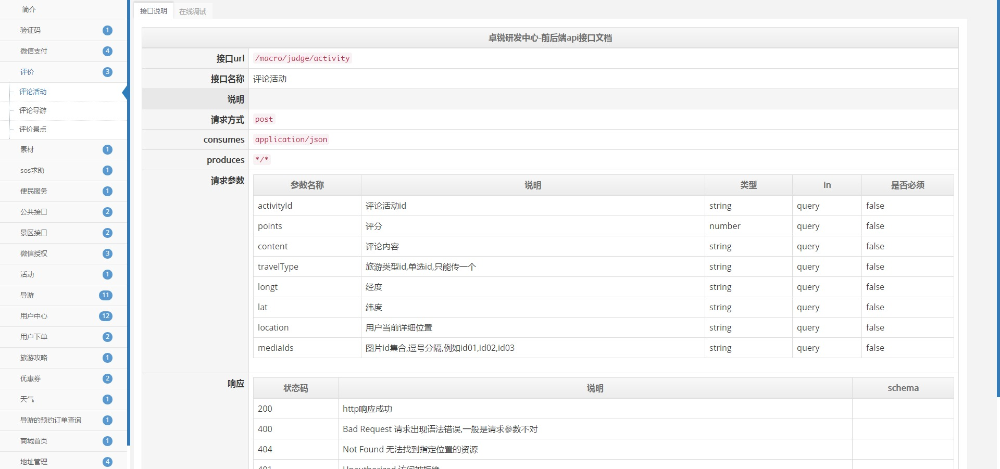
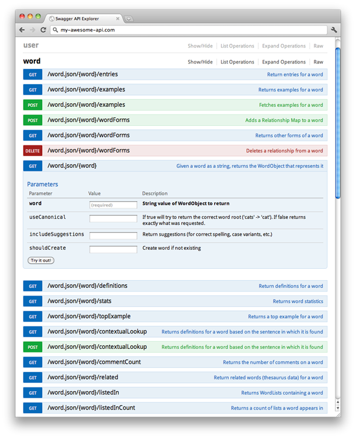

cloud-document-ui
简介
cloud-document-ui是Swagger的前端UI实现,目的是替换Swagger默认的UI实现Swagger-UI,规范前后端开发流程,减少交流成本,提高工作开发效率.
cloud-document-ui 只是Swagger的UI实现,并不是替换Swagger功能,所以后端模块依然是依赖Swagger的,需要配合Swagger的注解达到效果,注解说明
效果图如下：

Swagger简介
Swagger 是一个规范和完整的框架，用于生成、描述、调用和可视化 RESTful 风格的 Web 服务。总体目标是使客户端和文件系统作为服务器以同样的速度来更新。文件的方法，参数和模型紧密集成到服务器端的代码，允许API来始终保持同步。Swagger 让部署管理和使用功能强大的API从未如此简单。
Swagger-UI默认效果图如下：

下载
cloud-document-ui下载地址：下载
使用说明
- 首先需要引入swagger的配置包信息,如下：
<dependency>
<groupId>io.springfox</groupId>
<artifactId>springfox-swagger2</artifactId>
<version>2.2.2</version>
</dependency>
<!-- 这里swagger-ui是swagger的默认实现,这个jar可以不用引入,使用下面的cloud-document-ui替代--->
<dependency>
<groupId>io.springfox</groupId>
<artifactId>springfox-swagger-ui</artifactId>
<version>2.2.2</version>
</dependency>
- 在使用前需要配置maven的私服地址,配置如下：
<repositories>
<repository>
<id>nexus</id>
<name>drore Team nexus</name>
<url>http://192.168.11.110:8081/nexus/content/groups/public</url>
</repository>
</repositories>
<pluginRepositories>
<pluginRepository>
<id>nexus</id>
<name>drore Team nexus</name>
<url>http://192.168.11.110:8081/nexus/content/groups/public</url>
</pluginRepository>
</pluginRepositories>
<!-- maven 打包自动上传 -->
<distributionManagement>
<repository>
<id>nexus-drore-team-3rd</id>
<url>http://192.168.11.110:8081/nexus/content/repositories/thirdparty/</url>
</repository>
</distributionManagement>
- maven项目中引用
cloud-document-ui的jar包依赖,如下：
<dependency>
<groupId>com.drore.cloud</groupId>
<artifactId>cloud-document-ui</artifactId>
<version>1.0</version>
</dependency>
- Spring项目中启用swagger,代码如下：
XML方式
<bean class="com.drore.configuration.SwaggerConfiguration"/>
<mvc:annotation-driven content-negotiation-manager="contentNegotiationManager" />
<bean id="contentNegotiationManager" class="org.springframework.web.accept.ContentNegotiationManagerFactoryBean">
<property name="favorPathExtension" value="false" />
<property name="favorParameter" value="false" />
<property name="ignoreAcceptHeader" value="false" />
<property name="mediaTypes" >
<value>
atom=application/atom+xml
html=text/html
json=application/json
*=*/*
</value>
</property>
</bean>
注解方式
@Configuration
@EnableSwagger2
public class SwaggerConfiguration {
@Bean
public Docket createRestApi() {
return new Docket(DocumentationType.SWAGGER_2)
.apiInfo(apiInfo())
.select()
.apis(RequestHandlerSelectors.basePackage("com.drore.cloud"))
.paths(PathSelectors.any())
.build();
}
private ApiInfo apiInfo() {
return new ApiInfoBuilder()
.title("西溪湿地洪园微信RESTful APIs")
.description("西溪湿地洪园微信")
.termsOfServiceUrl("http://www.xxsdhy.com/")
.contact("xiaoym@drore.com")
.version("1.0")
.build();
}
}
cloud-document-ui默认访问地址是：http://${host}:${port}/doc.html
注意事项
- swagger封装给出的请求地址默认是
/v2/api-docs,所以cloud-document-ui调用后台也是/v2/api-docs,不能带后缀,且需返回json格式数据,框架如果是spring boot的可以不用修改,直接使用,如果是Spring MVC在web.xml中配置了DispatcherServlet,则需要追加一个url匹配规则,如下：
<servlet>
<servlet-name>cmsMvc</servlet-name>
<servlet-class>org.springframework.web.servlet.DispatcherServlet</servlet-class>
<init-param>
<param-name>contextConfigLocation</param-name>
<param-value>classpath:config/spring.xml</param-value>
</init-param>
<load-on-startup>1</load-on-startup>
</servlet>
<!--默认配置,.htm|.do|.json等等配置-->
<servlet-mapping>
<servlet-name>cmsMvc</servlet-name>
<url-pattern>*.htm</url-pattern>
</servlet-mapping>
<!-- 配置cloud-document-ui的url请求路径-->
<servlet-mapping>
<servlet-name>cmsMvc</servlet-name>
<url-pattern>/v2/api-docs</url-pattern>
</servlet-mapping>